Broadcast hash join: probing one partition at a time
component index | Broadcast exchange: building the relation
BroadcastHashJoinExec consumes an already built hash table. The driver holds
the plan node and obtains a Broadcast[HashedRelation]; an executor JVM task
probes that relation with rows from one streamed partition. The streamed
side need not be shuffled or sorted for this join. Exchanges elsewhere in the
query still count, and a DataFrame written in Python does not make this join
run in a Python worker.
Flow at a glance
- Broadcast exchange: The exchange builds and broadcasts a hash table keyed by region ID.
- Executor task: The task looks up each order's region ID and checks each candidate's minimum amount.
- Left join output: The task emits a row per match, or one row with a null label if none qualify.
Watch for: A hash hit alone is not a match: the order must also meet the region's minimum amount.
Show the animated flow

| Owner |
Contract |
| Driver plan node |
Stores left/right keys and children, joinType, buildSide, optional residual condition, and a null-aware flag. HashJoin maps the sides to build/stream, checks key count and compatible types, and binds key projections against the respective output schemas. |
| Build-side exchange |
requiredChildDistribution requests BroadcastDistribution(HashedRelationBroadcastMode(buildBoundKeys, ...)) only on the build child. buildPlan.executeBroadcast[HashedRelation]() returns a handle; the other child has UnspecifiedDistribution. The exchange, not each probe task, collects and indexes the build rows. |
| Executor task attempt |
The non-codegen doExecute maps streamed partitions. buildReadOnlyRelation obtains broadcast.value.asReadOnlyCopy() and accounts its estimated size in task peak execution memory. Long and unsafe relations share backing storage with the copy: per-task lookup cursors and reusable result rows are separate, not an entire duplicate hash table per row or task. Whole-stage generated code initializes its relation through the same helper. |
| Downstream operator |
Receives an RDD[InternalRow] on the row path. HashJoin.join projects the result to the declared left/right schema and counts emitted rows. Inner joins return both sides; left outer makes right fields nullable; left semi/anti return just the left side. Output partitioning derives from the streamed child, not the broadcast. |
Plan contract · key binding and projection ·
row and codegen paths · per-task relation and memory accounting ·
shared unsafe map / shared long map.
Trace: two matching rows, and two kinds of miss
Use ordinary SQL equality, not null-safe equality:
SELECT o.order_id, r.label FROM orders o LEFT JOIN regions r
ON o.region_id = r.id AND o.amount >= r.minimum
- The planner finds hashable equality keys and a broadcastable
right side. A left outer join must preserve
orders: right-build is allowed;
left-build is not. A full outer join cannot use this broadcast hash strategy.
- Suppose the build table contains
(id=7, label=East, minimum=0) and
(7, Outlet, 100). Both survive materialization. For order (41, 7, 120) the
task generates key 7 once, iterates both candidates, and checks the residual
amount predicate. It emits two rows: (41, East) and (41, Outlet).
A unique-key table uses a single-value lookup instead of a match iterator.
- Order
(42, 9, 50) has no hash entry. Order (43, 7, -1) has candidates but
neither passes the residual. A left outer probe emits (42, NULL) and
(43, NULL) exactly once each. An inner probe would emit neither. Thus a
hash hit is not necessarily a SQL match. The four rows are a set of example
results, not an ordering guarantee. Outer probe and residual handling.
- Do not reuse ordinary anti-join intuition for
NOT IN. The separate
isNullAwareAntiJoin path requires one key per side, LeftAnti, BuildRight,
and no residual. An empty build returns all left rows; a build containing a
null key returns none; otherwise only non-null, unmatched probe keys survive.
Constructor guards · executor branches.
Look for BroadcastHashJoin, BuildRight/BuildLeft, and the separate
BroadcastExchange in df.explain("formatted") or the SQL UI's final plan.
Compare number of output rows at the join with streamed input rows: many
duplicates on both sides can produce a large output even when the broadcast
fits. A slow streamed partition can dominate the join without a join-induced
shuffle. Peak execution memory includes the recorded relation estimate; summing
it across tasks is not a measure of distinct executor-resident hash tables.
A build timeout fails while obtaining the handle, before these probes can run;
inspect the exchange and driver logs. A task that fails after starting its probe
can be retried over the streamed partition with the broadcast handle. The join
does not switch algorithms halfway through that partition or rebuild a table
from source for every retry. Join dispatch and output metric.